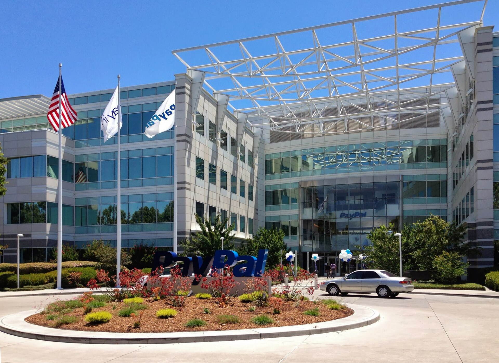

Vol. I · No. 100 · Saturday, August 29, 2026 · 18 items · ~16 min read
A judge, a Fed chair and a circuit panel each drew a line this week where an institution had assumed there was none.
AI & the Law · San Francisco · cross-spectrum LCLR
A judge finds the Pentagon blacklisted Anthropic to punish it for criticising the government
The Pentagon, Arlington, Virginia. Judge Rita Lin held that the department's supply-chain-risk designation of Anthropic was retaliation for protected speech. — Wikimedia Commons / public domain (U.S. federal government)
United States District Judge held on Thursday that the administration's designation of Anthropic as a was unlawful, in a 59-page ruling that found First Amendment retaliation, a denial of due process, and agency action that was arbitrary and capricious. The designation became official on March 5, 2026, made by Defense Secretary Pete Hegseth; Hegseth and the President then directed all federal agencies, not only defence, to stop working with the company. The underlying dispute was narrow and specific: Anthropic had refused to relax the guardrails that would have permitted Pentagon use of its models for fully autonomous weapons and for mass surveillance of American citizens. The department denied any intent to use the models unlawfully and argued the company was trying to control the military's use of models it had paid for.
Lin built the pretext finding out of the government's own record. Hegseth had proposed applying the to Anthropic, which as the court noted would mean the company was essential to national security rather than a threat to it. The department kept pursuing a contract after the designation, and the government went on collaborating with Anthropic's Mythos model on cybersecurity. Lin also found the company "undisputedly lacks" backdoor access to its technology once it is delivered, which removed the stated security rationale. The government's "words and deeds confirm that the challenged actions were based on a desire to make a public example out of Anthropic for its 'arrogance' in criticizing the government," she wrote.
"The empty invocation of national security is not a blank check to punish and retaliate against government critics."
— Judge Rita Lin, ruling, August 27
The ruling preserved the department's discretion while taking away its method: "Though the is undisputedly free to select the AI vendor of its choice, the evidence demonstrates that the broad measures imposed on Anthropic were illegal and baseless." Anthropic filed two complaints in March, one in California and one in Washington; the District of Columbia suit is still pending. Restrictions on the company's Mythos and Fable models were dropped on June 30. A company spokesperson said it welcomed the ruling and remained "focused on working productively with the government." The department had not commented at publication.
Markets · Jackson Hole, Wyoming
Warsh's first Jackson Hole keynote moves the two-year note toward a September hike
Federal Reserve Chair used his first keynote on Friday to say that "the Fed's predominant focus right now should be on prices," adding that this summer's better-than-expected inflation readings "do not tell me that underlying trends have meaningfully improved." Headline personal consumption expenditures inflation is running at 3.7 per cent year on year and the core measure at 3.3, both well above the 2 per cent target. Three officials dissented in favour of a quarter-point increase at the July 28 to 29 meeting; the committee held.
The curve did something specific. The two-year yield rose six to eight basis points to 4.298 per cent while the ten-year finished roughly unchanged at 4.676 and the thirty-year fell about two to 5.168, a that priced more near-term tightening and less long-run inflation inside the same thirty minutes. Futures-implied odds of a September increase moved to roughly 57 per cent from about 35; Kalshi went from nearly 70 per cent odds of no change to about 48 per cent odds of a quarter point. The S&P 500 closed at 7,711.48, off 0.25 per cent, and the Nasdaq at 26,402.42, off 0.52. Gold fell 2.9 per cent to $4,528.60 and bitcoin 3.1 per cent to about $77,900, the unwinding in step.
Law · San Francisco
The Ninth Circuit says commodities law does not shield Kalshi's sports contracts from Nevada
A unanimous panel of Judges Ryan D. Nelson, Bridget S. Bade and Kenneth K. Lee refused an injunction on Friday, holding that the "likely does not preempt Nevada's gaming regulations as applied to Kalshi's sports event contracts." The panel drew its line inside the product rather than around it: election wagers, it indicated, could fall within the commission's exclusive jurisdiction, while sports bets likely lack sufficient economic impact. Judge Lee illustrated the test by conceding that "perhaps in an uber-technical sense a Mets' loss could have marginal economic impact as some fans guzzle more beer to drown away their sorrows." A separate Nevada case over the election contracts was remanded.
The Third Circuit went the other way in a New Jersey injunction ruling earlier this year, so the same federal statute now means one thing in Trenton and another in Las Vegas, which is the strongest available argument for review. The Supreme Court grants roughly one petition in a hundred, and a between circuits on a federal question is the best predictor there is. The binds California, Oregon and Washington, so a Nevada caption closes the West Coast. Kalshi is reported to be raising at a $40 billion valuation and did roughly $34 billion of volume in August against $37 billion in July; it said it will seek further review and that the commission "is working to clarify those regulations." DraftKings and FanDuel rose more than 5 per cent.
Artificial Intelligence
A chipmaker priced on a calendar, and a lab that gates a discipline in product settings
AI · Santa Clara, California
Marvell grew 37 per cent and fell anyway, on when the Google money arrives
Marvell's Santa Clara campus. The company beat on revenue and lost a tenth of its value on a single sentence about fiscal 2029. — Wikimedia Commons
Second-quarter revenue came in at $2.739 billion, up 37 per cent year on year against roughly $2.71 billion of consensus, with non-GAAP earnings of $0.94 a share against $0.93 expected. The stock, which had run 187 per cent higher year to date going into the print, closed Friday at $216.62, down 10.28 per cent. Intraday accounts of the move varied from 6 to 10 per cent as the session ran; the close is the figure that settled. What did the damage was not the quarter. Third-quarter non-GAAP gross margin was guided to 57.5 to 58.5 per cent, roughly 90 basis points lower sequentially, which management attributed to a rising mix of custom at lower margin. And chief executive said the Google agreement contributes "much more significantly in ."
The agreement itself, disclosed on August 19 and worth a 10 per cent pop at the time, is a capital markets structure rather than a supply contract. Google takes a warrant to buy up to 58.97 million Marvell shares at a fixed strike of $206.58, about $12.2 billion at full exercise, against cumulative revenue. It covers custom chips for inference accelerators, storage controllers and network interface controllers tied to Google's tensor processing ecosystem, and analysts have put the realisable revenue at up to $120 billion through fiscal 2033.
AI · San Francisco · dated August 27, outside the 24-hour window
Anthropic gives away 10,000 Claude seats to scientists and keeps biology behind a gate
The company opened 10,000 free and discounted Claude Team seats to academic researchers. Standard seats cost nothing; premium seats carrying five times the usage limits are $15 a month. Eligibility runs through a at an academic or non-profit institution, who verifies and then adds lab members to the plan, and the existing AI for Science credit programme expands out of the biological sciences into every field. Anthropic says it intends to go well beyond the initial 10,000 over the coming months.
The carve-out is the part worth reading. Researchers working in biology and chemistry remain limited to Opus-class models, and Claude Fable models continue to block professional biology and drug-development queries on grounds. The restriction follows the company's August 7 post on strengthening Fable 5's biology safeguards and sits on top of Claude Science, the research workbench it launched on June 30 to produce auditable artefacts and flexible compute access.
Markets & Deals
The largest transaction in the window was a death; the second largest was a coupon of nothing
Markets & Deals · New York
Advent and Stripe walk away from a $53 billion PayPal buyout without waiting for an answer

PayPal's San Jose headquarters. The board thought $60.50 a share was too low and never replied; the bidders left before it had to. — Wikimedia Commons
and Stripe abandoned their pursuit of PayPal on Friday after failing to agree a price. The offer on the table was $60.50 a share, valuing the company at more than $53 billion, which would have ranked among the largest leveraged buyouts ever attempted. PayPal's board considered it too low and had not sent a formal reply; the consortium withdrew before receiving one. Block, Stripe and Advent had approached the company together in April as a , and Block left before the formal bid went in.
The stock fell as much as 16 to 17 per cent before the open, started the session down about 13, and closed at $54.15, off $7.32 or 11.91 per cent. The bid sat roughly 12 per cent above that close, which means the entire takeover premium came out in a single session, and that $7.32 is about the cleanest measure available of how much of a share price is rumour. Because nothing was signed there is no reverse termination fee, no , and no exhibit filed on an 8-K; the whole approach exists only in reporting, which is exactly why the board could let it lapse without a public record of the negotiation. Reporting notes a future approach remains possible, and no standstill has been disclosed.
Markets & Deals · Cambridge, Massachusetts
Moderna prices an upsized $2.6 billion zero-coupon convertible and pays $285 million to move the dilution line
The deal priced overnight and came upsized from $2.0 billion: $2.6 billion of 0.00 per cent convertible senior notes due March 1, 2032, sold under to qualified institutional buyers, with a $400.0 million option settling over a thirteen-day period and closing expected September 1. The notes bear no regular interest and the principal does not accrete, so this is a true zero. The conversion rate is 4.7487 shares per $1,000 of principal, an initial conversion price of about $210.58 and a 47.5 per cent premium to Thursday's Nasdaq close of $142.77. Net proceeds are roughly $2,562.9 million.
About $285.0 million of that goes straight back out to buy a struck to $392.6175, a 175 per cent premium, meaning roughly eleven cents of every dollar raised was spent moving the dilution ceiling from $210 to $392. The issuer cannot redeem before September 6, 2029, and then only if the stock trades at 130 per cent of the conversion price for twenty of any thirty consecutive days, a . Holders get a fundamental-change put at par and a conversion-rate increase into a called redemption period, and settlement is issuer-elected in cash, stock or a combination. The offering documents concede that option counterparties "could increase (or reduce the size of any decrease in) the market price."
Markets & Deals · Wilmington, Delaware
BioXcel files Chapter 11 with Teva as its only stalking horse
BioXcel Therapeutics and its subsidiaries filed voluntary Chapter 11 petitions in the District of Delaware on Friday to run a court-supervised . Teva is the sole bidder for substantially all assets, at $57.5 million upfront plus up to $67.5 million in milestones. The assets are IGALMI, which is approved, and the pending application for BXCL501, both dexmedetomidine treatments for acute agitation in adults with schizophrenia or bipolar disorder. Existing lenders are providing $19 million of subject to court approval. One regional outlet puts the potential total at $145 million against the $125 million headline elsewhere; the filed purchase agreement governs and this paper is not choosing between them.
With no competing bidder disclosed at filing, the value fight is not in the asset purchase agreement. It is in the bid procedures order, which sets the break-up fee, the expense reimbursement and the auction timetable, and which is the first substantive docket entry worth reading. Teva frames the purchase under its stated Pivot to Growth strategy as disciplined neuroscience business development. The case sits in Wilmington because is available to any Delaware-incorporated debtor.
Law & the Courts
A compliance record used against the company that made it, and two judges declining to be moved
Law · Wilmington, Delaware
Walmart pays $50 million over opioid prescriptions its own pharmacists flagged and its compliance team filed away
A Walmart pharmacy counter. The government's case was built on the refusal-to-fill forms the company's own pharmacists generated. — Wikimedia Commons
The Justice Department and the Drug Enforcement Administration announced a $50 million settlement on Friday evening resolving Controlled Substances Act allegations that Walmart pharmacies filled thousands of invalid prescriptions. The complaint was filed on December 22, 2020 in the District of Delaware and amended in 2022, with a conduct period running from June 26, 2013. The theory of liability names both the corporate compliance function and individual pharmacists, a dual-track knowledge allegation rather than alone. The red flags alleged are the familiar ones: dangerous opioid combinations, opioid and non-opioid cocktails, repeated high-dose fills and repeated early-fill requests.
The evidence is the company's own paperwork. Pharmacists reported suspected pill-mill prescribers to corporate compliance through thousands of refusal-to-fill forms, and the government alleges compliance did not act on them. It quotes a compliance-team director writing that rather than analysing those reports, "[d]riving sales and patient awareness" was "a far better use of our Market Directors and Market manger's time," the typographical error being in the original. Walmart also signed a with the DEA requiring an employee and patient hotline for reporting suspected illegal dispensing, proactive monitoring of dispensing patterns, and a prescriber-evaluation process. The department states the claims are allegations only, with no determination of liability. The case was brought by the Civil Division's with assistant U.S. attorneys in four districts.
Law · New York · cross-spectrum LLLCR
Hellerstein refuses a second time to move Trump's New York conviction into federal court
Judge denied removal of People of the State of New York v. Trump from state court on Friday, the second time he has done so. The Second Circuit vacated his first denial in November and ordered him to reconsider issues a panel found he had not addressed; he reconsidered and wrote that the arguments were "neither new nor legally sufficient." Two grounds carried it. The hush-money payments and the cover-up were private, unofficial acts outside presidential immunity, and the request was in any event . This was the third attempt to move the case.
The doctrinal question is narrow. under 28 U.S.C. section 1442(a)(1) lets a federal officer pull a state prosecution into federal court, but only for acts done under colour of the office, so everything turns on whether paying Stormy Daniels was an act of the presidency or an act of a private man. The underlying conviction is 34 felony counts of falsifying business records in the first degree. An appeal back to the Second Circuit is expected.
Law · Miami · South Florida
A Miami jury convicts a former Aeroflot employee on all twelve counts for routing aircraft parts to Russia
Alexander Mamonov, 62, a Russian national living in South Florida, was convicted on Thursday on every charge by a federal jury in the Southern District of Florida, before Judge . The twelve counts run from conspiracy to violate the and illegal export of controlled items through conspiracy to commit smuggling, smuggling of goods, submitting false or misleading export information, and conspiracy to commit money laundering. Sentencing is set for November 20. He was indicted in April 2025 alongside Ignat Vakorin of Russia, who remains a fugitive.
The scheme moved more than $900,000 of aircraft parts to Russia and to the state-owned carrier PJSC Aeroflot by misleading American suppliers into believing the goods were bound for the United Arab Emirates and China, a pattern. After the 2022 invasion the Commerce Department tightened restrictions and issued a barring Aeroflot from receiving American-origin goods. "You cannot put a fake destination on a shipping label and make American export laws disappear," said U.S. Attorney Jason A. Reding Quiñones. The FBI Miami Field Office investigated with Commerce's Bureau of Industry and Security.
Law · Boston · cross-spectrum LLCR
Talwani blocks the mail-ballot rule for fourteen days and the government appeals within one
Judge issued a fourteen-day temporary restraining order on Thursday against the Postal Service rule implementing the President's mail-voting executive order, and the administration filed its notice of appeal on Friday, sending the question to the . Her stated ground was operational rather than constitutional: states "don't have the time or money to design and produce new ballots, update their systems and train officials to upload voter data to the Postal Service" before the midterms. Under the order the Postal Service could refuse to deliver ballots from states that decline to submit eligible-voter lists and adopt a uniform envelope. The first general-election mail ballots go out September 4, and she set a September 3 hearing on converting the order into an injunction.
The whipsaw is a function of what the Supreme Court did and did not decide. On Monday it lifted one of two injunctions six to three, on procedural grounds and without reaching legality, after which plaintiffs refiled framed to comply with that ruling. Their theory is textual: Article I, section 4 gives the times, places and manner of congressional elections to state legislatures subject to congressional override, and the President appears nowhere in the clause. Timing does its own work here through the . The White House called the blocking order "unreasoned and unlawful."
The World
A strait declared open, an inventory declared empty, and a commander who died in the custody of the court that convicted him
The World · Manama · cross-spectrum LLCLRR
CENTCOM declares the Hormuz shipping lanes mine-free as Iran assembles its price for reopening them
The Strait of Hormuz from orbit. American forces say the transit lanes are clear; Tehran says reopening them is a matter of terms. — Wikimedia Commons / NASA MODIS
Admiral , commander of United States Central Command, said in a video statement on Friday that American forces "have successfully cleared sea mines in the strait's international shipping lanes that were laid months ago by Iran's Islamic Revolutionary Guard Corps," and that "internationally recognized transit routes in the strait are free of Iranian sea mines." Divers, special operations forces and aircraft cleared the . CENTCOM says it has escorted or assisted nearly 1,500 commercial vessels carrying nearly 750 million barrels of crude, and that as of Friday it had redirected 75 vessels, disabled three and boarded two enforcing the blockade. The war passed its six-month mark the same day.
Tehran is pricing the reopening rather than contesting the clearance. , secretary of the Supreme National Security Council, said Iran is compiling a list of conditions at mediators' request and has agreed a corridor with Oman conditioned on American compliance; the reported demands include an end to the war and compensation for damage, and the proposed framework would exclude foreign military vessels. Foreign Minister Abbas Araghchi said a return to diplomacy is "not impossible" but "hinges on US understanding of one simple fact: Pressure doesn't work." The President said on Thursday that the United States "is not talking with Iran." Throughput estimates diverge sharply: Bloomberg puts current crude flows at six to eight million barrels a day on trader estimates, while Fox cites about five million against more than twenty before the war. The corridor runs past the .
Framing noteThe two ends of the spectrum ran Cooper's claim under opposite verbs and neither disputed it. Fox's running file is headlined "Iran defies Trump, declares Strait of Hormuz blocked"; NBC's, the same day, is "Iran war mediators focus on reopening Strait of Hormuz." Enforcement against mediation, from identical facts.
The World · Europe · cross-spectrum LLLCLR
The Iran war has consumed 65 per cent of American Patriot interceptors, officials tell the AP
A United States defence official in Europe told the Associated Press that the military faces a shortage of advanced interceptors on the continent that is "beyond critical," largely because of the war with Iran. Per the AP the conflict has consumed roughly 65 per cent of the inventory, about 1,500 rounds of 2,330. American forces in Europe "definitely" do not have enough to stop a sustained ballistic missile attack and would have "very limited" capability against a single strike or a stray Russian missile off course. A NATO official confirmed low inventories. Chief Pentagon spokesman disputed the reporting: claims of shortages "are false," and "We have everything required to strike at the time and place of the President's choosing."
The replacement schedule is the binding constraint. NATO expects Europe's first Patriot production facility to open in Germany in September, with deliveries possibly beginning in early 2027 to Germany, the Netherlands, Romania and Spain. The number lands in a week of Russia-facing signals: the Washington Post reported fresh intelligence that Moscow reads the United States as weakened by the Iran war, CIA Director John Ratcliffe travelled to Moscow and met , and Under Secretary of Defense for Policy told allies the alliance must become more European-led.
Framing noteThe Patriot number itself ran consensus, because it is a single AP exclusive carried close to verbatim from HuffPost through the Washington Times, so the Pentagon's denial travels intact in every version. The divergence is on the Moscow trip: Fox frames it through the Kremlin's own characterisation, quoting Naryshkin calling it routine and the President calling it "semi-routine," while the New York Times frames it as a private warning to settle "before their military and economic situation gets worse."
The World · The Hague · cross-spectrum LLC
Ratko Mladic dies in United Nations custody in The Hague
The wartime commander of the Main Staff of the Army of died on Thursday at the United Nations Detention Centre in The Hague. The tribunal said he died while hospitalised and did not give a cause of death; he had suffered several strokes in recent months. He had been in custody since his arrest in Serbia in 2011, and was serving a life sentence for genocide, crimes against humanity and war crimes committed during the 1992 to 1995 Bosnian war, upheld on appeal by the . Outlets gave his age variously as 82, 83 and 84; this paper does not print a figure it could not reconcile.
The convictions covered the summary execution of more than 8,000 Bosniak men and boys at in July 1995 and the years-long siege of Sarajevo, prosecuted on the theory of . He died a prisoner of the institution that convicted him, fifteen years after his arrest and thirty-one after the massacre, which is either the strongest available argument that international criminal tribunals work or the strongest argument about what they cost, depending on how much of a man's life a court is willing to spend to reach him.
Entertainment & EASL
A franchise fought over through a trust, a subsidy fixed by repricing a receivable, and a game that moved to get out of another game's way
Entertainment & EASL · Los Angeles
Jeanie Buss sues five siblings to void the secret vote selling the family's last 17.8 per cent of the Lakers
Crypto.com Arena, Los Angeles. The petition asks the probate court to remove two trustees and undo a sale resolution the sixth sibling says she never saw. — Wikimedia Commons
Jeanie Buss has petitioned in Los Angeles County Superior Court against all five of her siblings, Jim, Johnny, Janie, Joey and Jesse, seeking to block the sale of the family's remaining 17.8 per cent stake, to remove Janie and Joey as co-trustees, and to hold the siblings liable for aiding and abetting plus contempt of court. The petition, authored by of Sheppard Mullin, alleges the co-trustees acted "brazenly, knowingly and intentionally" and signed a sale resolution "secretly," against both a 2017 court order and the express provisions of the family trust. She accuses them of blindsiding her by telling ESPN they "decided as a family to sell" while she opposed it.
The instruments do the work here. The provides that once Jerry Buss is no longer controlling owner, "the Trustee shall take whatever actions are reasonably available to the Trustee to have Jeanie M. Buss appointed as the new Controlling Owner," and the trust defines "shall" to mean the trustee must act. Co-trustee decisions go by majority, and Janie and Joey replaced Jim and Johnny in 2017. The stake matters because league rules require a to hold at least 15 per cent. She argues separately that the underlying transaction is not binding: Mark Walter's roughly 65 per cent sale to Joshua Kushner and Bob Iger at a reported $12.5 billion has no final agreement, and no has been sent to the co-trustees.
Entertainment & EASL · Sacramento
California's film fix is a discount rate: 95 cents in two years instead of 90 cents in five
Legislators unveiled a bill on Friday evening addressing SB 122, the budget measure signed June 29 that capped corporate offsets at $5 million a year for three years and made a permanent floor of $5 million or 70 per cent of liability from 2030. It is a general revenue provision that never mentions film, and it came close to nullifying the state's $750 million Film and Television Tax Credit, itself more than doubled in 2025. The fix is not an exemption. Existing law let a production take a cash refund instead of a credit against liability at a 10 per cent discount over a five-year payback; the bill moves that to 5 per cent over two years. Independent film, at about 10 per cent of the programme, is exempted from the cap outright.
Non-refundable credits issued before 2025 get an extended life, reported by The Hollywood Reporter as fifteen years for productions shooting in state and by Variety as an extension of up to five. The authors, Senator Ben Allen and Assemblymember Rick Chavez Zbur, also wrote the 2025 expansion, so the same legislators are repairing damage their own chamber did nine weeks later. A provision easing claims against sales tax was dropped from the circulating version, and state leaders resisted a full carve-out because would have brought the technology sector to the same door. Roughly 350,000 letters had reached legislators by August 14. The puts the vote Monday evening, with both houses needing to pass it by midnight. Deadline reported the measure as AB 136; the legislature's own record shows AB 136 of this session is titled "Courts," and Variety and The Hollywood Reporter both give 186, which this paper follows.
Entertainment & EASL · Los Angeles · Games
Cloud Imperium delays Squadron 42 to 2027 rather than launch into the attention buzz saw of GTA 6
The Star Citizen spin-off moves to the second quarter of 2027 from an end-of-2026 target, and the reason given is calendar rather than code. Chief executive told backers the game "needs the opportunity to have the focus of the wider gaming world," and that there is "no way I want to launch my spiritual successor to Wing Commander, a game that has had twelve years of blood, sweat and tears invested into it... into the attention buzz saw of GTA 6." He is explicit that the collision is not commercial: "While GTA 6 isn't launching on PC this November, pretty much all outlets and most content creators will be all over it, not leaving a lot of room for other coverage."
Star Citizen has been in development since 2012 and has raised over $1 billion through and early access without a formal release date; Squadron 42's own development began in 2014, with a cast including Gary Oldman, Gillian Anderson, Mark Hamill, Andy Serkis and Henry Cavill. A small number of original backers and long-time content creators get access in October, with further announcements shortly afterwards. The gravitational field Roberts is dodging has a number on it: projects the global games market at $213.9 billion in 2026, up 6.1 per cent, and says console revenue would be flat year on year without GTA 6.
Compiled by Matthew Yellin · mattyellin.com · Est. May 2026 · A cross-spectrum brief drawn each morning from wires, filings, and the trade press